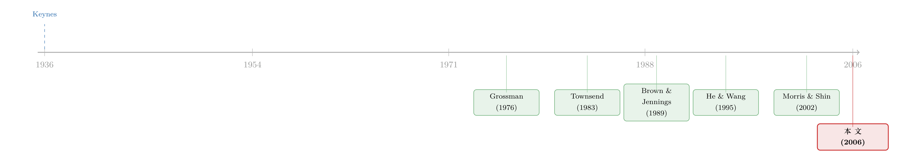

选美比赛里的价格：当「我猜你猜我猜」写进了资产定价
本文读的是 Allen, Morris & Shin (2006, Review of Financial Studies)：在风险厌恶、短视且价格带噪声的市场里，今天的价格等于「今天对明天价格的平均预期」，层层迭代下去，就成了「对预期的预期的预期……」。这套高阶信念有一个被忽视的代数性质——平均预期不满足迭代期望律，于是价格会系统性地偏向公共信息、偏离基本面共识（带上泡沫的影子），并且对基本面变动反应迟钝（带上动量的影子）。一篇把凯恩斯「选美比赛」隐喻第一次干净地写进完全理性资产定价模型的论文。
1 一个被引用了七十年、却从没被算清楚的比喻
凯恩斯 (Keynes, 1936) 在《通论》里留下了那段几乎人人都会背的话：职业投资就像一场报纸选美比赛，你要选的不是你自己觉得最美的脸，也不是大家真心觉得最美的脸，而是你认为大家会认为大家觉得最美的那张脸——「我们已经到了第三层，把智力用在预测平均意见所预期的平均意见上。还有人，我相信，正在实践第四层、第五层乃至更高的层级。」
这段话被引用了七十年。它太有画面感了，以至于学界和业界都觉得「股市当然是这么回事」。但奇怪的是，理论上的资产定价模型却长期讲不出这个故事。为什么？
因为标准的代表性投资者 (representative investor) 模型里，根本没有高阶信念的容身之处。在那个世界里，价格等于资产未来支付流在某个等价鞅测度 (equivalent martingale measure) 下的折现期望——这正是价格的鞅性质 (martingale property)。而鞅性质背后藏着一条铁律：迭代期望律 (law of iterated expectations)。代表性投资者今天对「他明天的预期」的预期，就等于他今天对未来支付的预期：
$$E_{it}\big[E_{i,t+1}(\theta)\big] = E_{it}(\theta).$$
一旦这条律成立，未来就可以「折叠 (folding back)」到现在——明天的预期可以无痛地坍缩成今天的预期，「我猜你猜」里那些套娃般的层级，一层层全都自动消解了。选美比赛根本开不起来。
于是问题就清楚了：要让凯恩斯的比喻活过来，必须先让这条迭代期望律失效。 而这篇论文最漂亮的地方，就是它指出——只要投资者之间存在差异信息 (differential information)，对平均预期而言，这条律本就不成立，而且失效得很有规律。
2 核心一击：平均预期为什么不满足迭代期望律
先把符号摆清楚。对任意随机变量 \(\theta\)，记 \(E_{it}(\theta)\) 为投资者 \(i\) 在 \(t\) 期的个人预期，记 \(\bar E_t(\theta)\) 为 \(t\) 期所有人预期的横截面平均，记 \(E^*_t(\theta)\) 为只用公共信息得到的公共预期。
个人预期与公共预期都老老实实地满足迭代期望律。但平均预期 \(\bar E_t\) 不满足——
$$\bar E_t\big[\bar E_{t+1}(\theta)\big] \;\neq\; \bar E_t(\theta).$$
这个不等号，就是整篇论文的发动机。怎么看出来的？作者举了一个静态到不能再静态的例子（无学习、无时间），却把机制照得透亮。
设 \(\theta \sim N(y,\,1/\alpha)\)，先验均值 \(y\) 是大家都看得到的公共信号。每个人 \(i\) 另外观察一个私人信号 \(x_i = \theta + \varepsilon_i\)，噪声 \(\varepsilon_i\) 在人群中均值为 \(0\)、精度为 \(\beta\)。这就是全部信息。那么贝叶斯更新给出个人预期：
$$E_i(\theta) = \frac{\alpha y + \beta x_i}{\alpha + \beta}.$$
第一步，把它在人群上取平均。私人噪声 \(\varepsilon_i\) 一平均就「被洗掉 (washed out)」了，于是 \(\overline{x_i} \to \theta\)，平均预期变成
$$\bar E(\theta) = \frac{\alpha y + \beta \theta}{\alpha + \beta}.$$
接着，一个自然的问题是：如果我现在不是去猜 \(\theta\)，而是去猜「别人平均会怎么猜 \(\theta\)」，我该怎么报价？注意，\(\bar E(\theta)\) 本身又是 \(y\) 和 \(\theta\) 的函数。我对它做预期，就是把上式里的 \(\theta\) 换成我对 \(\theta\) 的个人预期 \(E_i(\theta)\)：
$$E_i\big[\bar E(\theta)\big] = \frac{\alpha y + \beta E_i(\theta)}{\alpha + \beta} = \frac{\alpha y + \beta\cdot \frac{\alpha y + \beta x_i}{\alpha+\beta}}{\alpha+\beta} = \left[1 - \Big(\tfrac{\beta}{\alpha+\beta}\Big)^2\right] y + \Big(\tfrac{\beta}{\alpha+\beta}\Big)^2 x_i.$$
再在人群上平均一次（\(x_i \to \theta\)）：
$$\bar E\big[\bar E(\theta)\big] = \left[1 - \Big(\tfrac{\beta}{\alpha+\beta}\Big)^2\right] y + \Big(\tfrac{\beta}{\alpha+\beta}\Big)^2 \theta.$$
然后，把这个操作迭代 \(k\) 次，就得到了全文最干净的那个公式：
$$\bar E^{\,k}(\theta) = \left[1 - \Big(\tfrac{\beta}{\alpha+\beta}\Big)^k\right] y + \Big(\tfrac{\beta}{\alpha+\beta}\Big)^k \theta. \tag{1}$$
盯着这个式子看，两件事跳出来。
其一，每多绕一层「猜」，权重就更偏向公共信号 \(y\)。 因为 \(\beta/(\alpha+\beta) < 1\)，每迭代一次，落在真值 \(\theta\) 上的权重 \((\beta/(\alpha+\beta))^k\) 就缩小一截。其二，当 \(k\to\infty\)，\(\bar E^{\,k}(\theta) \to y\)。 也就是说，「无穷阶平均信念」会彻底收敛到公共先验，把私人信息里关于 \(\theta\) 的全部内容统统丢光。
这背后的直觉，比代数更值得记住。当我预测 \(\theta\) 本身时，私人信号和公共信号同样有用，我给它们同样的权重。但真正关键的一步在于：当我转而预测「别人的平均看法」时，我心里清楚——别人也都看到了同一个公共信号 \(y\)，而别人的私人信号我一无所知、且它们彼此会相互抵消。于是 \(y\) 成了预测「平均意见」的更好工具，我会超额地依赖公共信息。任何让高阶信念进入定价的模型，都会得出同一个结论：价格过度倚重公共信息。
这和 Morris & Shin (2002)「公共信息的社会价值」里那个著名的结论是一脉相承的：那里是显式的协调动机让公共信号被过度看重；这里没有任何显式协调，但「公共信号进入了每个人的需求函数」这一事实，让它在预测总需求时仍然保留了超出基本面的价值。换句话说：私人噪声在加总时被洗掉了，公共信号里的噪声却洗不掉，于是它对预测总需求、进而预测价格，依然有用。
2.1 把「绕圈子」写成一条马尔可夫链
作者还给了第二种讲法，我觉得它才是这篇论文真正优雅的地方。把个人 \(i\) 的推断写成矩阵形式：对状态向量 \((y,\,\theta)\) 取平均预期，相当于乘上一个转移矩阵——
$$\bar E \begin{pmatrix} y \\ \theta \end{pmatrix} = \begin{pmatrix} 1 & 0 \\ \frac{\alpha}{\alpha+\beta} & \frac{\beta}{\alpha+\beta} \end{pmatrix} \begin{pmatrix} y \\ \theta \end{pmatrix}.$$
这是一条定义在状态空间 \(\{y,\theta\}\) 上的两状态马尔可夫链 (two-state Markov chain) 的转移矩阵。公共信号 \(y\) 是它的吸收态 (absorbing state)——第一行是 $(1,0)$，系统一旦进入 \(y\) 就再也出不来。而高阶平均信念，无非就是把这个转移矩阵迭代 \(k\) 次：
$$\bar E^{\,k} \begin{pmatrix} y \\ \theta \end{pmatrix} = \begin{pmatrix} 1 & 0 \\ 1-\left(\frac{\beta}{\alpha+\beta}\right)^k & \left(\frac{\beta}{\alpha+\beta}\right)^k \end{pmatrix} \begin{pmatrix} y \\ \theta \end{pmatrix} \;\longrightarrow\; \begin{pmatrix} y \\ y \end{pmatrix} \quad \text{as } k\to\infty.$$
真值 \(\theta\) 上的权重，恰好是马尔可夫链「停留在暂态 (transitory state)」的概率。信念的阶数越高，停留在暂态的概率越小，\(\theta\) 拿到的权重就越少——直到全部流入吸收态 \(y\)。一个看似抽象的「我猜你猜我猜」的无穷层级，被化成了一条会被吸收态慢慢吞掉的马尔可夫链。漂亮。
3 资产定价模型：把选美比赛真正建出来
到这里，定价公式 \(p_t = \bar E_t(p_{t+1})\) 还只是「凭凯恩斯的权威」假设出来的。于是反转出现：作者要造一个真正的、完全理性的噪声理性预期模型，让这条公式自己长出来，并且认真处理「从价格中学习」这件事。
3.1 设定
时间是离散的，\(t = 1, 2, \dots, T, T+1\)。一只风险资产在 \(T+1\) 期清算，在第 \(1\) 到 \(T\) 期交易。清算价值 \(\theta \sim N(y, 1/\alpha)\) 在第 \(1\) 期交易前就定下来、之后保持不变。
关键的设定是重叠世代 (overlapping generations, OLG)：每期出生一个单位质量的交易者，活两期，年轻时买入建仓、不消费，年老时（下一期）平仓、消费、然后退出。这个假设不是为了好玩——它把「短期价格波动对交易者至关重要」这件事推到了极致。年轻的交易者今天买入，明天就要靠卖出价 \(p_{t+1}\) 来吃饭，所以他根本不关心 \(T+1\) 期那个遥远的清算价值，他只关心明天的价格。这正是选美比赛的精髓：我不在乎这张脸到底美不美，我在乎明天别人愿意出多少钱接我的盘。
作者坦承 OLG 只是一个把「短视」放大的建模装置。即便是长寿的交易者，只要有平滑消费的偏好（或者像 Allen & Gorton (1993) 那样，资金被有代理问题的职业经理人打理），也一样会在意短期价格。这个设定让模型与 Brown & Jennings (1989) 里短视交易者的版本相当接近。
每个 \(t\) 期出生的交易者 \(i\)，信息集是 \(\{y, p_1, p_2, \dots, p_t, x_{it}\}\)：完整的价格历史，加上自己的私人信号 \(x_{it} = \theta + \varepsilon_{it}\)，其中 \(\varepsilon_{it} \sim N(0, 1/\beta)\)，跨人、跨时独立。上一代人的私人信号他看不到。所有人都是 CARA 效用 \(u(c) = -e^{-c/\tau}\)，\(\tau\) 是风险容忍度（绝对风险厌恶的倒数）。每期还有一个外生的噪声净供给 \(s_t\)，均值 \(0\)、精度 \(\gamma_t\)，跨期独立——它的作用是经典的：防止价格变成完全揭示基本面的信号。
3.2 价格如何递归地「向后折叠」
先看最后一期 \(T\)。CARA 加正态，需求是线性的。交易者 \(i\) 对资产的需求为
$$\frac{\tau}{\operatorname{Var}_{iT}(\theta)}\big(E_{iT}(\theta) - p_T\big). \tag{4}$$
由于私人信号在给定 \(\theta\) 下 i.i.d.，条件方差跨人相同，记为 \(\operatorname{Var}_T(\theta)\)。把需求在所有人上加总，得到总需求
$$\frac{\tau}{\operatorname{Var}_T(\theta)}\big(\bar E_T(\theta) - p_T\big), \tag{5}$$
其中 \(\bar E_T(\theta)\) 正是 \(\theta\) 在 \(T\) 期的平均预期。令总需求等于净供给 \(s_T\)，市场出清给出
$$p_T = \bar E_T(\theta) - \frac{\operatorname{Var}_T(\theta)}{\tau}\, s_T. \tag{6}$$
接着看 \(T-1\) 期。这里是 OLG 的威力所在：在 \(T-1\) 期交易的年轻人，关心的是 \(p_T\) 而不是清算价值 \(\theta\)，因为他们的消费挂在 \(p_T\) 上。于是同样的推导给出
$$p_{T-1} = \bar E_{T-1}(p_T) - \frac{\operatorname{Var}_{T-1}(p_T)}{\tau}\, s_{T-1}. \tag{7}$$
把 (6) 代入 (7)，并注意 \(\bar E_{T-1}(s_T) = 0\)：
$$p_{T-1} = \bar E_{T-1}\bar E_T(\theta) - \frac{\operatorname{Var}_{T-1}(p_T)}{\tau}\, s_{T-1}. \tag{8}$$
这是一个可以一路向后迭代的递归关系。于是 \(t\) 期价格就是：
方程 (9) 就是整篇论文的归宿。价格不是基本面的折现期望，而是「平均预期的平均预期的……平均预期」。第 2 节里那条「平均预期不满足迭代期望律」的代数性质，现在直接作用在价格上：那一长串嵌套的 \(\bar E\) 不会自动坍缩成 \(\bar E_t(\theta)\)，凯恩斯的层级被真真切切地保留了下来。
如果把第 2 节静态例子里的结论搬过来（用定价公式 \(p_t = \bar E_t(p_{t+1})\) 的简化版），价格就长成
$$p_t = \left[1 - \Big(\tfrac{\beta}{\alpha+\beta}\Big)^{T-t}\right] y + \Big(\tfrac{\beta}{\alpha+\beta}\Big)^{T-t} \theta. \tag{3}$$
读这个式子：距离清算还有 \(T-t\) 期，就要绕 \(T-t\) 层「猜」，于是真值 \(\theta\) 上的权重是 \((\beta/(\alpha+\beta))^{T-t}\)，离清算越远（\(T-t\) 越大），价格越偏向公共信号 \(y\)、越偏离基本面。
4 两个结果：泡沫的影子，与动量的影子
作者用三个命题刻画了价格路径，结论可以浓缩成两条。
第一，价格的平均路径会系统性地偏离基本面共识。 这里「系统性」三个字是要害——噪声供给会让价格的实际实现值上下抖动，但即便把供给噪声平均掉，价格路径仍然偏离 \(\bar E_t(\theta)\)（基本面的市场共识），而且比共识离真值更远。价格不只是没反映真实基本面，它还被公共信号往外多拽了一把。只要市场价格不反映关于真值的共识，我们就有了泡沫 (bubble) 的成分——注意，这里没有任何非理性、没有任何泡沫破裂的预设，纯粹是高阶信念的代数后果。（关于理性人如何在攀比心下亲手吹起泡沫的另一条路径，可参见《怕的不是亏钱，是「跟大家一起穷」》。）
第二，价格对基本面变动的反应迟钝，呈现惯性或「漂移 (drift)」。 即便交易者已经更新了对基本面的看法，价格也没有跟着动那么多。第 1 期那个初始调整，慢得「太过头」。这一条让人立刻想起实证里那个顽固的规律：在大约 1 到 12 个月的水平上，资产收益里存在可预测的成分，价格表现出动量 (momentum)（Barberis, Shleifer & Vishny (1998) 收集了大量这类证据）。在一场选美比赛里，价格表现出同样的「动量/漂移」的外在症状——尽管价格明明是对未来清算价值的前瞻性预期，这种前瞻性预期里却内生地藏着可观的惯性。
把两条放在一起，这篇论文给出了一个统一的图景：泡沫式的偏离与动量式的迟钝，并非来自非理性或行为偏差，而是差异信息下高阶信念的同一个代数事实——平均预期不满足迭代期望律——在价格上的两种投影。
5 文献脉络
这条线的源头当然是凯恩斯 (Keynes, 1936) 的选美比喻。但比喻归比喻，真正能把「差异信息 + 价格揭示」写成均衡的，是 1970–80 年代那批噪声理性预期模型：Grossman (1976)、Hellwig (1980)、Diamond & Verrecchia (1981) 奠定了「价格在竞争性市场中扮演信息聚合角色」的框架，Admati (1985) 把它推广到多资产、强调了交易者预测误差之间的相关性。

但这些早期工作大多盯着交易量，没有把高阶信念在价格里的角色挑明。与本文血缘最近的是动态噪声理性预期这一支：Singleton (1987)、Brown & Jennings (1989)、Grundy & McNichols (1989)、He & Wang (1995)。Brown & Jennings (1989) 已经发现，在噪声理性预期均衡里（不同于鞅式的世界），过去的价格会向市场参与者传递信息；He & Wang (1995) 则注意到，有限期限的假设让高阶预期可以被降阶。本文的贡献，是把这些模型里早已存在、却没被点破的高阶信念结构显式地拎出来，并用马尔可夫链给了它一个干净的代数刻画。
另一条平行的脉络在宏观：Townsend (1978, 1983) 与 Phelps (1983) 开创的「预测别人的预测 (forecasting the forecasts of others)」，到 Sargent (1991) 一路发展，研究的正是前瞻性的迭代平均预期。本文指出，这类前瞻性迭代平均预期表现出惯性——这对近年宏观里重新升温的异质预期研究（Woodford (2003)、Hellwig (2002) 等）颇有启发。而 Morris & Shin (2002) 关于公共信息社会价值的工作，则与本文「过度依赖公共信号」的结论遥相呼应。Bacchetta & van Wincoop (2002, 2004) 也在汇率与资产定价中探讨了高阶信念。
（关于「你以为的独家消息，市场可能早已知道」这种高阶不确定性，本博客另有一篇可参看：《你手里的「独家消息」，可能整个市场早就知道了》。）
6 评论与延伸（Q&A + 研究方向）
(a) 几个可能的疑问
Q：迭代期望律对个人预期成立，为什么对「平均预期」就失效了？
因为「平均」这个算子里藏了猫腻。个人预期 \(E_{it}\) 用的是同一个信息集、同一个概率测度，迭代期望律是测度的内禀性质，自然成立。但 \(\bar E_t\) 是把不同人、用不同信息集得到的预期横截面加总。当我去预测「别人的平均预期」时，我用的是我自己的信息去推断别人会怎么想，而别人看到的公共信号我知道、私人信号我不知道——这种信息的不对称让两次平均不能交换次序，于是 \(\bar E_t\bar E_{t+1}(\theta) \neq \bar E_t(\theta)\)。
Q：这算「真泡沫」吗，还是只是借了「泡沫」这个词？
它是「泡沫的成分 (elements of a bubble)」，措辞很克制。价格系统性地偏离基本面共识、且偏得比共识更远，这符合泡沫的外在特征。但它和经典的理性泡沫（如 rational bubble 里价格含一个发散的鞅成分）机制不同：这里价格仍是有限期、收敛的，偏离来自高阶信念对公共信号的过度加权，而非自我实现的发散预期。
Q：模型说价格「反应迟钝」，可这和价格是前瞻性预期不是矛盾吗？
不矛盾，这恰恰是反直觉的精彩之处。价格确实是对未来的前瞻性预期，但「对未来的预期」本身就内嵌了高阶信念的惯性：要预测明天的价格，就要预测别人明天的平均看法，而别人也在做同样的事——这层层嵌套让私人信息的传导被「打了折扣」，公共先验拖住了价格，于是前瞻性预期反而显得迟钝。
Q：为什么非要用重叠世代（OLG）这么强的假设？换成长寿交易者会怎样？
OLG 是把「短视」推到极致的建模装置，目的是让交易者只关心下一期卖出价、彻底不管遥远的清算价值，从而把选美比赛的逻辑放到最显眼的位置。作者在结论里讨论了放松这个假设：长寿交易者只要有消费平滑偏好或代理问题，也会在意短期价格，定性结论应当稳健，只是高阶信念的效应会被稀释。
Q：噪声供给 \(s_t\) 跨期独立，这个假设合理吗？
作者自己承认这点「可能不太令人满意」，尤其在 OLG 下不算自然。它给了一个「噪声交易者每期到场、下期自动反向平仓」的故事来勉强自圆其说。本质上这只是为了保证价格不完全揭示、并维持可解性的技术装置。He & Wang (1995) 用的是 AR(1) 供给，Brown & Jennings (1989) 用随机游走——本文的独立设定是它们的一个特例。
Q：如果信息变得几乎全公共（\(\beta \to 0\) 或人人共享），高阶信念还重要吗？
不重要了。看公式 (1)：当私人信号精度 \(\beta\) 很小，\(\beta/(\alpha+\beta)\to 0\)，于是 \(\bar E^{\,k}(\theta)\approx y\)，而且各阶迅速坍缩到公共先验——价格几乎完全由公共信息决定，高阶层级失去意义。高阶信念之所以「咬人」，正是因为存在有价值且分散的私人信息。Pearlman & Sargent (2002) 也指出，某些此类问题会退化为共同知识情形。
(b) 几个可能的研究问题与提案
1. 把「过度依赖公共信号」搬到公司债市场。 【经济故事】公司债流动性差、定价高度依赖评级、央行公告、宏观数据这类公共信号，私人信息（如机构的信用研究）分散且难以加总。本文预测：越是依赖公共信号的市场，价格越会过度反应公共信息、偏离基本面共识。信用市场可能是检验这一机制的理想场所。 【可行性】中。需要 TRACE 成交数据 + 区分公共信号事件（评级变动、FOMC、宏观数据发布）。识别上可比较「公共信号密集期」与「私人信息主导期」债券价格对基本面（违约率、回收率）的反应弹性。难点在于如何干净地度量「基本面共识」。
2. 用外资持有人份额做「私人信息异质性」的代理。 【经济故事】外资与本土投资者往往掌握不同信息（本土看得懂公共政策语境，外资有全球比较视角）。本文框架下，投资者群体信息结构的差异会改变价格对公共/私人信号的加权。一个自然问题：外资份额高的市场，价格是否更偏向全球公共信号、对本地私人信息反应更钝？ 【可行性】中。需要跨国持有人数据（如 FactSet/EPFR）+ 各国公共信号事件。识别可借助指数纳入等准自然实验改变外资份额。挑战在于把「信息异质性」从「需求弹性」中剥离。
3. 直接检验「价格偏离比共识更远」这条命题。 【经济故事】本文给出了一个可证伪的强预测：价格不仅偏离平均预期，而且比平均预期离真值更远。如果能同时观测到价格、分析师/投资者的预期分布、以及事后实现的基本面，就能直接检验这个「更远」是否成立。 【可行性】中偏高。盈余公告场景下，可用分析师预期共识做 \(\bar E_t(\theta)\)、用事后实际盈余做 \(\theta\)、用公告前价格做 \(p_t\)。难点是噪声供给的平均化——需要足够大的横截面来「洗掉」供给噪声。
4. 高阶信念与流动性危机中的「过度同向」。 【经济故事】危机中公共信号（恐慌指数、央行表态）主导一切，本文预测此时价格会极度偏向公共信号、私人信息几乎失声——这可能是流动性骤停时价格「过度同向崩塌」的一个理性解释。 【可行性】中偏低。需要在危机窗口内区分公共与私人信息流，数据稀疏、事件少，识别困难，更多可能停留在校准/数值模拟而非干净的因果识别。
7 我的判断
这篇论文的贡献，不在于发现了什么新现象，而在于用最少的假设，把一个被引用了七十年的比喻第一次算清楚了。它的核心是一句几乎可以写在明信片上的话：平均预期不满足迭代期望律，且其失效遵循一条以公共信号为吸收态的马尔可夫链。就凭这一句代数事实，泡沫的影子和动量的影子同时落地，而且全程没有动用任何非理性——这是它最有说服力、也最优雅的地方。马尔可夫链那个表述尤其漂亮，把抽象的无穷层级化成了一个会被吸收态吞掉的概率，直觉一下子就立住了。
要说担忧，主要在于它终究是一个高度风格化的理论模型，几个关键假设（OLG 短视、噪声供给跨期独立、CARA-正态）都是为可解性服务的便利设定，把它们放松后定性结论能撑多远，论文只在结论里口头讨论、没有正式证明。更要紧的是，「价格偏离基本面共识」和「价格表现出动量」这两条，论文是作为模型的性质给出的，并没有拿数据去对——它给的是机制，不是实证检验。所以它说的是「选美比赛能够产生泡沫与动量的外在症状」，而不是「现实中的泡沫与动量就是这么来的」。
我接下来最想看到的，是有人把这个框架的可证伪预测——「价格比共识离真值更远」——拿到能同时观测价格、预期分布与事后基本面的场景里去较真地检验一次（盈余公告或许是最干净的试验田）。如果这条「更远」在数据里站得住，那这篇 2006 年的理论论文就不只是把凯恩斯算清楚了，而是真的抓住了价格偏离的一个可度量的来源。
参考文献
Admati, A. R. (1985). A Noisy Rational Expectations Equilibrium for Multi-Asset Securities Markets. Econometrica 53(3), 629–657.
Allen, F., & Gorton, G. (1993). Churning Bubbles. Review of Economic Studies 60(4), 813–836.
Allen, F., Morris, S., & Shin, H. S. (2006). Beauty Contests and Iterated Expectations in Asset Markets. Review of Financial Studies 19(3), 719–752.
Bacchetta, P., & van Wincoop, E. (2004). Higher Order Expectations in Asset Pricing. Unpublished paper, Studienzentrum Gerzensee.
Barberis, N., Shleifer, A., & Vishny, R. (1998). A Model of Investor Sentiment. Journal of Financial Economics 49(3), 307–343.
Brown, D., & Jennings, R. (1989). On Technical Analysis. Review of Financial Studies 2(4), 527–551.
Diamond, D., & Verrecchia, R. (1981). Information Aggregation in a Noisy Rational Expectations Economy. Journal of Financial Economics 9(3), 221–235.
Grossman, S. (1976). On the Efficiency of Competitive Stock Markets where Traders Have Diverse Information. Journal of Finance 31(2), 573–585.
Grundy, B., & McNichols, M. (1989). Trade and Revelation of Information through Prices and Direct Disclosure. Review of Financial Studies 2(4), 495–526.
He, H., & Wang, J. (1995). Differential Information and Dynamic Behavior of Stock Trading Volume. Review of Financial Studies 8(4), 914–972.
Hellwig, M. (1980). On the Aggregation of Information in Competitive Markets. Journal of Economic Theory 22(3), 477–498.
Keynes, J. M. (1936). The General Theory of Employment, Interest and Money. Macmillan, London.
Morris, S., & Shin, H. S. (2002). The Social Value of Public Information. American Economic Review 92(5), 1521–1534.
Samet, D. (1998). Iterated Expectations and Common Priors. Games and Economic Behavior 24(1–2), 131–141.
Singleton, K. (1987). Asset Prices in a Time-Series Model with Disparately Informed, Competitive Traders. In W. Barnett & K. Singleton (eds.), New Approaches to Monetary Economics. Cambridge University Press.
Townsend, R. (1983). Forecasting the Forecasts of Others. Journal of Political Economy 91(4), 546–588.
Woodford, M. (2003). Imperfect Common Knowledge and the Effects of Monetary Policy. In P. Aghion et al. (eds.), Knowledge, Information and Expectations in Modern Macroeconomics. Princeton University Press.